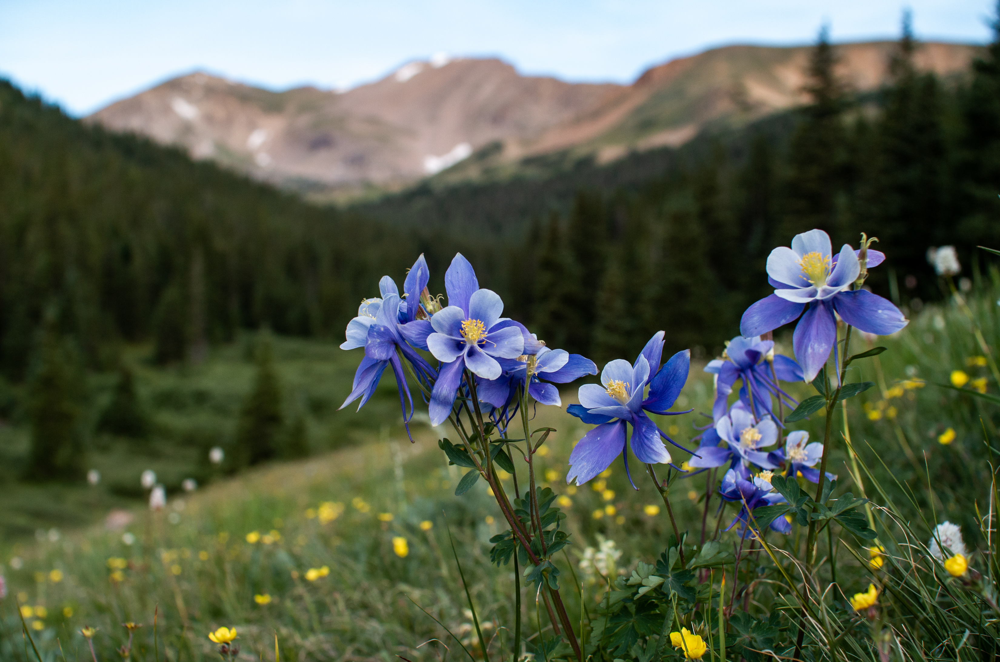
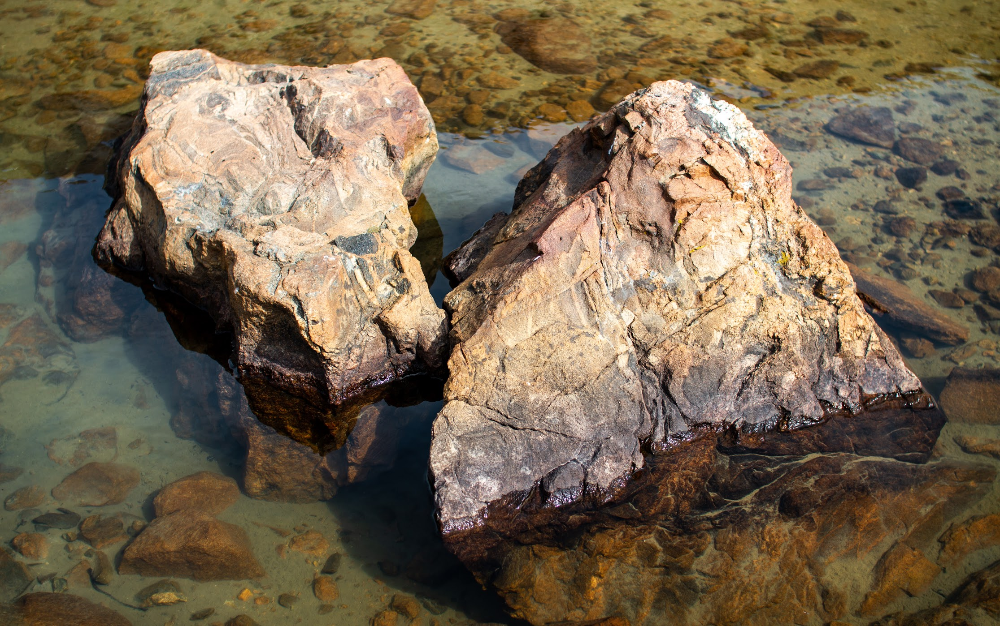
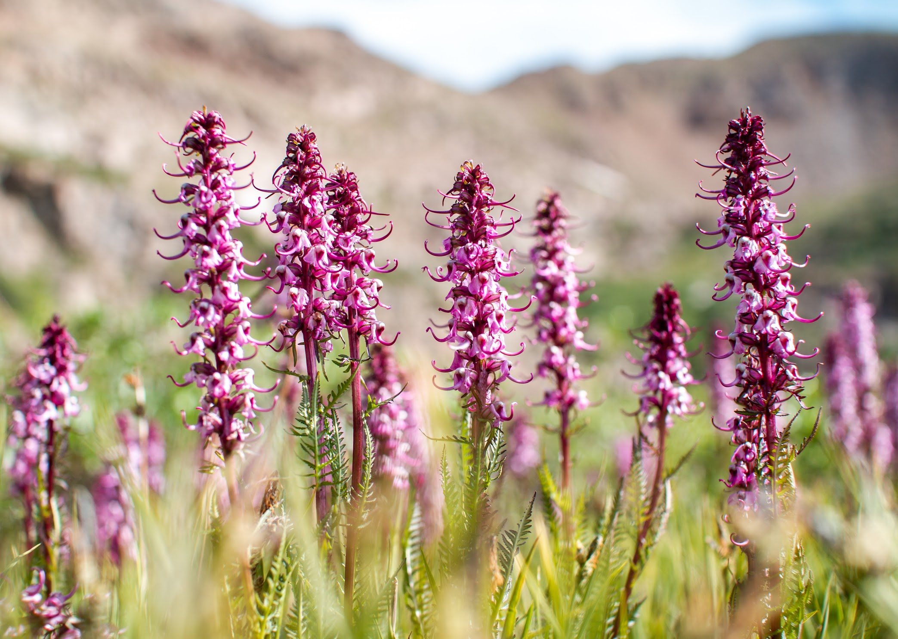
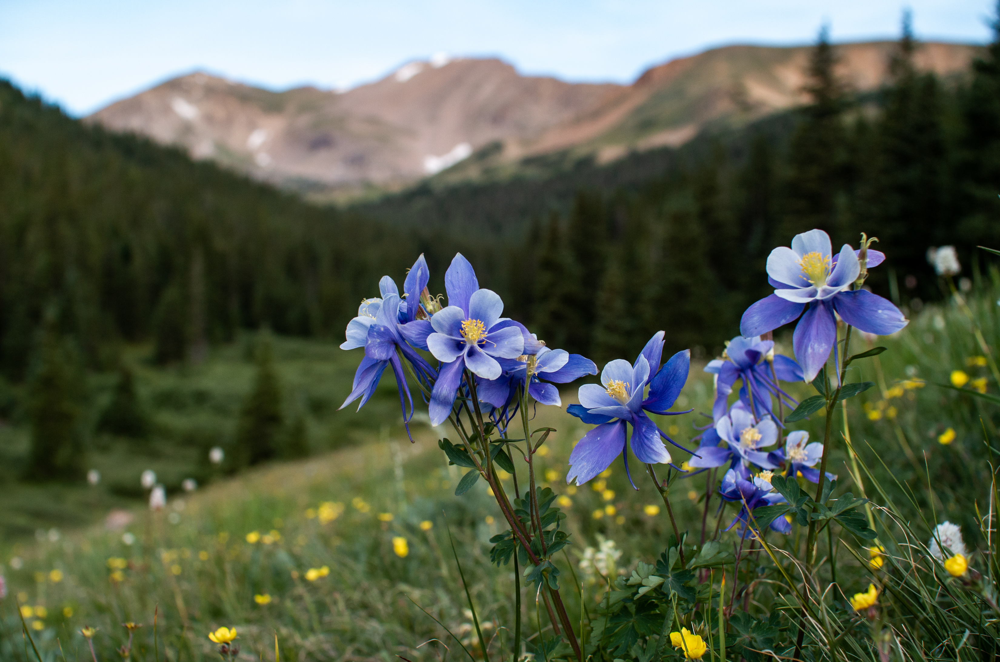
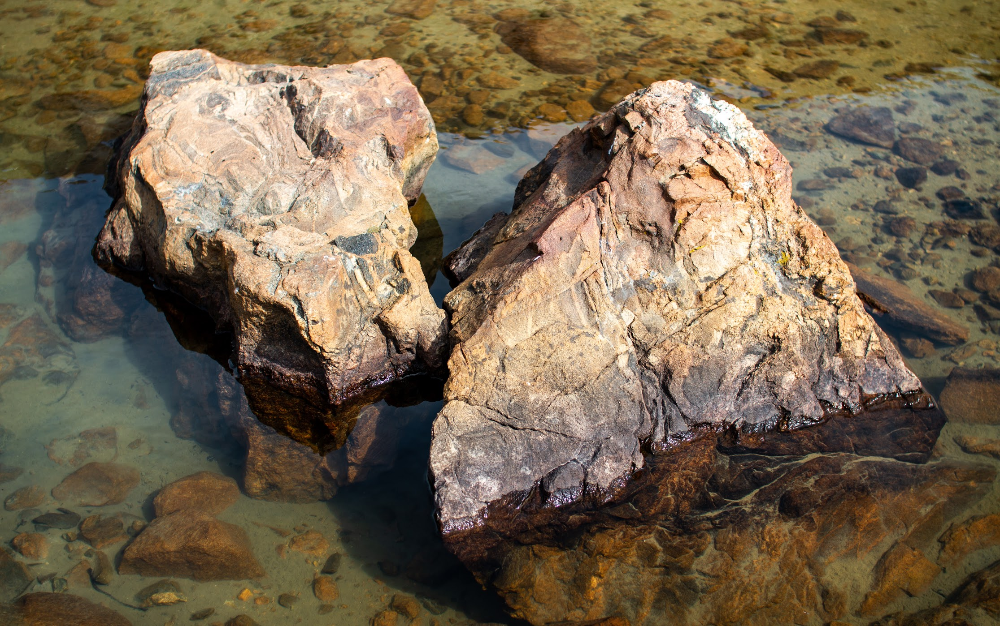
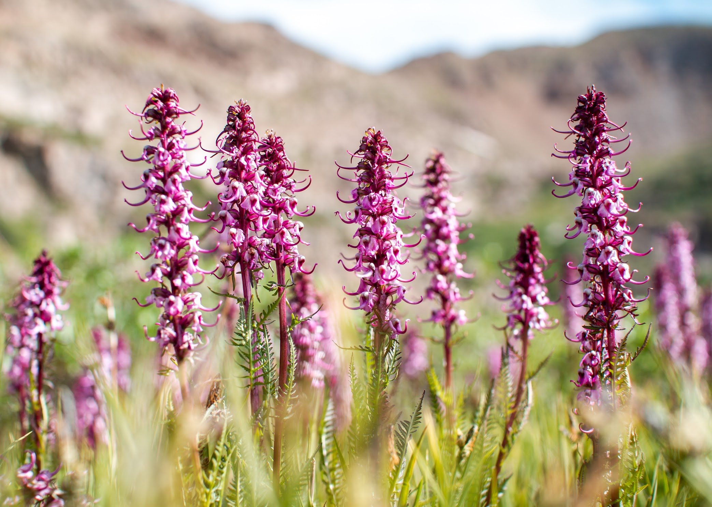
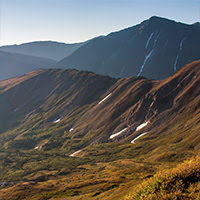

"Mount Sniktau is an easy Class 2 (barely - we're more inclined to call it Class 1 with just a little Class 2 thrown in), stroll from the summit of Loveland Pass, hence accessible by most any passenger vehicle. Sniktau combines easily with UN13,117 (Cupid) and Grizzly Peak for Front Range peakbaggers looking for an easy day that will have them back home well before dinner."